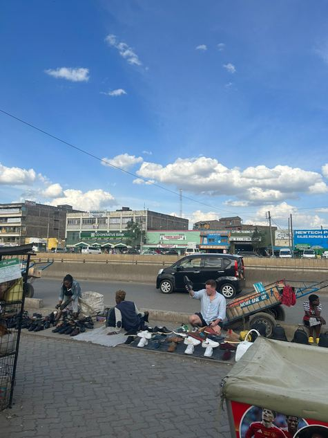

Connor was in Washington after the midterms. I asked him about the young people who voted for Trump in 2024. Can they afford a house yet? And what does he think Farage ought to learn from all this?
I backpacked from Kenya to South Africa, travelling through Tanzania, Malawi and Zimbabwe along the way. Malawi was one of my favourite stops.
More from the trip & two photographs
Before I got to South Africa, people I met further north kept warning me about it. In Johannesburg, I asked a friend whether he knew someone who could take me around the city centre. He found me a man about six foot five. I paid him about $100 to walk around with me for a few hours.

Shoe shopping in Kariobangi, Nairobi.Monument Hill, Orania, South Africa.